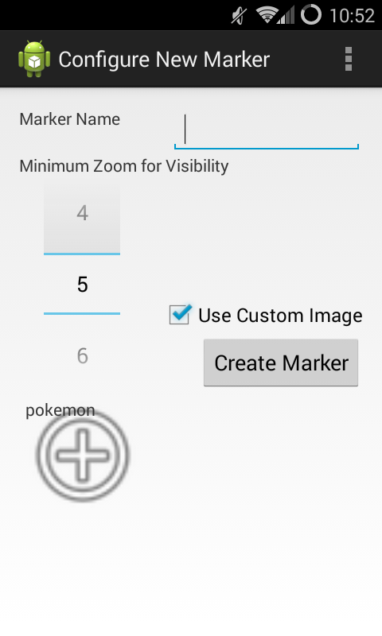

Find the World is a hide-and-seek type game for Google Maps. Inspired by the Google Maps April Fools' Day prank in 2014, it allows users to hide markers all around the world for others to find.
To start creating a game, select the first option, "Create a Game",
in the app's main menu. This will take you to a map view. To add a
marker, long click on the point where you want the marker to be and
select "add a marker". This will take you to the menu shown below:

Here, you can set the marker's name, whether to use the default image or
a custom one, and the minimum map zoom at which the marker is visible.
After clicking the create button, the marker should appear, and you can
click on the marker again to edit or delete it. When you are ready to
save the game, long click on the map, select the "Save Game" option,
enter a filename (don't worry about an extension - it will be saved as
yourname.zip), click the button.
To play a saved game, click the "Play Game" option at the main menu screen. Navigate the map to find all the available markers, and click on a marker when you see it to "find" it. The game is over when you have found all the markers, and from there you can choose to either restart the game or go back to the main menu. If you would like to add a game someone has sent to you, move it to the /hideandseek directory of your external storage, and then it will appear in the "Play Game" menu.
There are two ways to download images: downloading "image packs" from the app's main menu, and downloading the images yourself and moving them to the app's directory. Currently the only "image pack" available is Pokemon, so to download that, select the option in the image download menu. To download other images for use. Just move them somewhere in the /hideandseek directory and then they will appear when adding a marker.